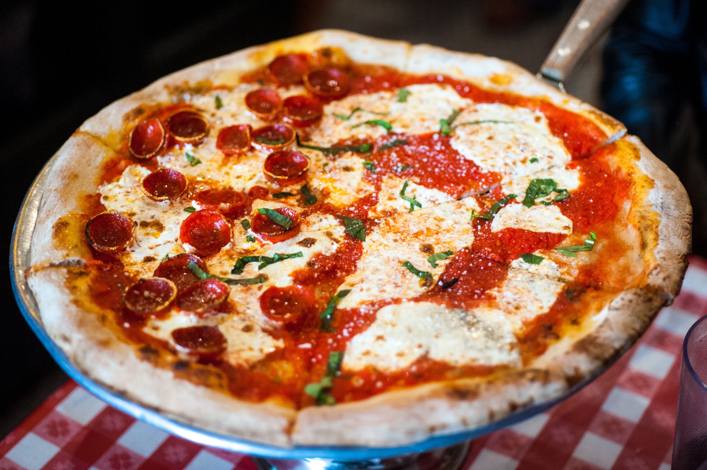

Pizza al estilo
Chicago con
espinacas y
champiñones
110 min / 6 a 8 porciones
110 min / 6 a 8 porciones
Masa
20 gr de levadura seca instantánea
1 cucharadita de azúcar
500 ml agua tibia
100 ml aceite vegetal
4 cucharadas de aceite de oliva
65 gr harina de maíz fina (chuchoca)
2 cucharaditas de sal
625 gr harina
Salsa
5 cucharadas de aceite oliva
1/2 cebolla picada en cubos finos
2 cucharaditas de sal
3 cucharadas de orégano gourmet
1 1/2 cucharadas de albahaca gourmet
2 tarro de tomates en cubos al natural
2 cucharaditas de azúcar
Relleno
1/2 cebolla en cubos
1. Para la masa, disolver la levadura y el azúcar en agua tibia en un bol grande. Dejar reposar 2 minutos. Agregar el aceite, la harina de maíz, sal y 400 gr de harina. Mezclar bien. Amasar y agregar el resto de harina, la cantidad necesaria para tener una masa blanda. Poner en el mesón y amasar por 5 minutos o hasta tener una masa lisa y elástica (agregar harina en el mesón a medida que se va amasando para que la masa no se pegue). Poner la masa en un bol aceitado, tapar con un paño de cocina limpio y dejar reposar hasta que la masa duplique su volumen (leudar). Golpear la masa para que baje y luego dejar leudar por 40 minutos adicionales.
2. Precalentar el horno a 230°C (450°F). Dividir la masa en dos partes iguales. Estirar cada porción de masa y colocarla en dos moldes para pizza de 30 cm (12 pulgadas) de diámetro, asegurándose de que cubra el fondo y los lados.
3. Para el relleno, disponer las espinacas en el fondo de cada molde, seguidas de los champiñones y el queso mozzarella rallado.
4. En un bol aparte, batir los huevos con la crema, la leche y el queso parmesano. Verter esta mezcla sobre las pizzas.
5. Colocar los moldes en el horno precalentado y hornear durante 25-30 minutos o hasta que la parte superior esté dorada y la masa esté cocida.
6. Retirar del horno y dejar reposar durante unos minutos antes de cortar y servir. ¡Disfruta tu pizza al estilo Chicago!
¡Buen provecho!
La enchilada típica o más común es la que está rellena de trozos de carne y frijoles negros, sin embargo, dependiendo del estilo que deseemos darle, podemos rellenarla de carnes rojos o blancas, queso, cebollas en aros, lechuga, tomate en rodajas, guacamole y crema de leche.
En una olla pon la carne, y luego echa el vino blanco, dos tazas de agua por cada 1L de vino, la cebolla cortada en 4, el pimentón y la zanahoria en rodajas gruesas. Agrega sal, pimienta, el tomillo y un diente de ajo si quieres. Cuece por 1 hora y media a 2 horas a fuego lento y con la olla tapada. La carne tiene que quedar bien blanda. Puedes hacerla en olla a presión también; son unos 45 minutos de cocción.

Y aunque cada uno de nuestros estados tienen sus propios platillos, la gastronomía de Oaxaca es una de las que más popularidad han ganado en todo el mundo. Entre sus platillos principales encontramos delicias como sus siete moles (negro, rojo, amarillo, coloradito, estofado, chichilo y verde), tamales, tlayudas, chapulines, gusanos de maguey, chicatanas y como bebida no puede faltar un buen mezcal.